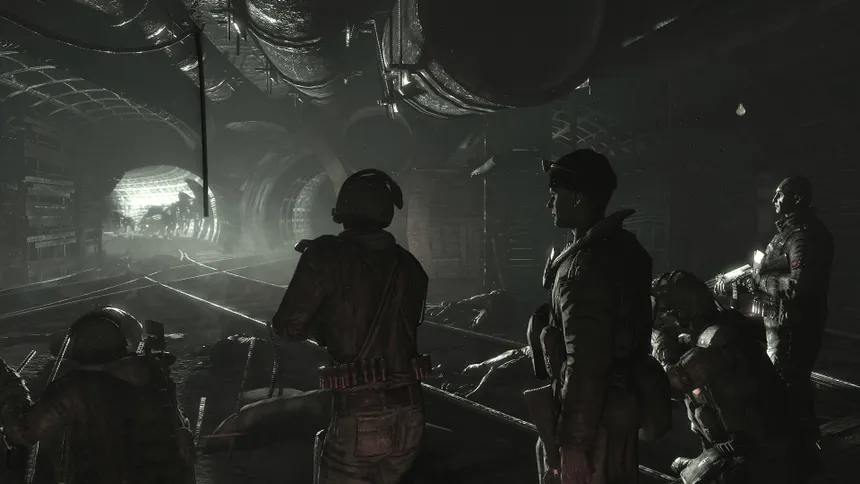

La supervivencia bajo tierra
Un mundo devastado donde la humanidad lucha por sobrevivir en los túneles del metro.
Un mundo devastado donde la humanidad lucha por sobrevivir en los túneles del metro.
Metro 2033 es un shooter en primera persona ambientado en un mundo post-apocalíptico tras una guerra nuclear, donde los supervivientes viven en el metro de Moscú.
4A Games
FPS / Survival Horror
Singleplayer
Oscuridad, tensión y supervivencia constante.
Administra munición y suministros cuidadosamente.
Viaja entre estaciones del metro y la superficie.
Basado en la novela de Dmitry Glukhovsky.
Combina disparos con elementos de supervivencia, sigilo y exploración. El uso de máscaras de gas y filtros es clave para sobrevivir.
